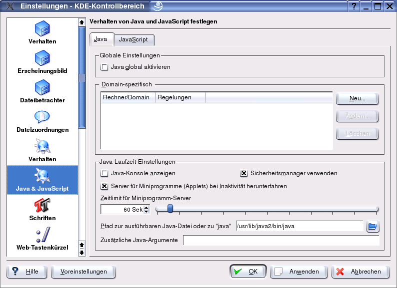

Proxyeinstellungen
Inhalt
Proxyeinstellungen
Inhalt  Browservorbereitung andere Browser
JonDo-Oberfläche
Browservorbereitung andere Browser
JonDo-Oberfläche
Proxyeinstellungen
Inhalt Browservorbereitung andere Browser
JonDo-Oberfläche
Klicken Sie im Menü Einstellungen auf Konqueror einrichten. Folgendes Fenster zeigt sich:

Wählen Sie den Eintrag Java & JavaScript. Deaktivieren Sie Java global aktivieren. Wechseln Sie zum Tab JavaScript und deaktivieren Sie JavaScript global aktivieren.
Wählen Sie nun den Eintrag Cookies. Überprüfen Sie die Einstellungen in folgendem Fenster:

Folgende Punkte sollten aktiviert sein:
Darüberhinaus ist es empfehlenswert, unter dem Eintrag Plugins alle Plugins zu deaktivieren.
Ergänzung:
Für die genannten Einstellungen können Sie jeweils domainspezifische Ausnahmen einstellen. So können Sie Konqueror für bestimmte, vertrauenswürdige Seiten erlauben, JavaScript zu interpretieren oder Cookies anzunehmen.
Bitte beachten Sie:
Das sind lediglich grundlegende Einstellungen. Sie beinhalten keine Anpassungen von HTTP-Headern. Verwenden Sie deshalb JonDoFox, um das Senden sämtlicher digitaler Spuren und die Ausführung von schadhaften aktiven Inhalten zu vermeiden.
Test:
Welche digitalen Spuren Sie noch hinterlassen, können Sie mit dem JonDos-Anonymitätstest überprüfen.
Proxyeinstellungen
Inhalt Browservorbereitung andere Browser
JonDo-Oberfläche